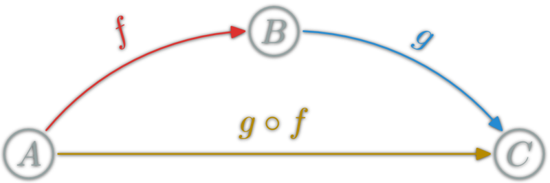
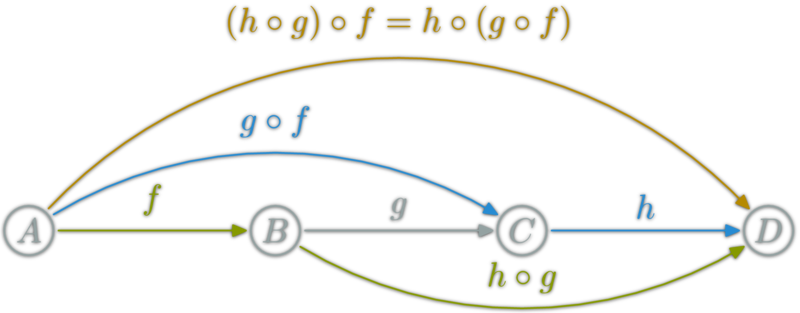
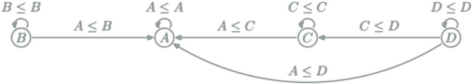
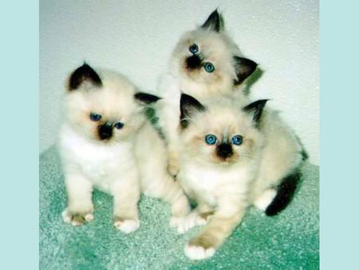
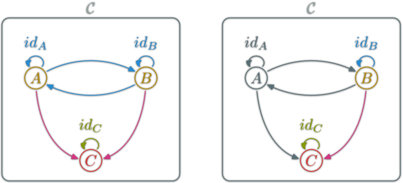
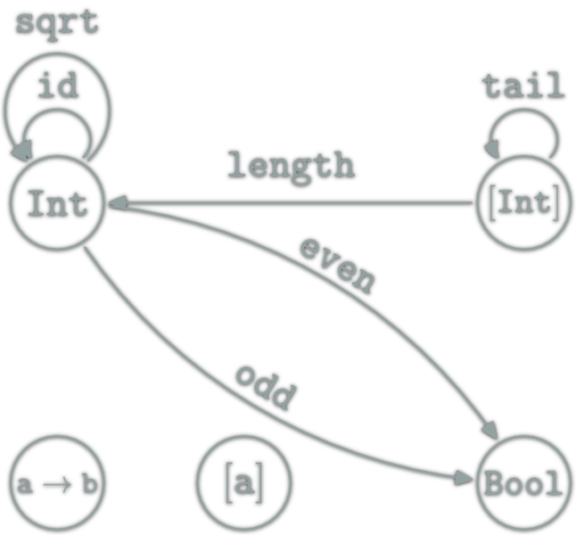
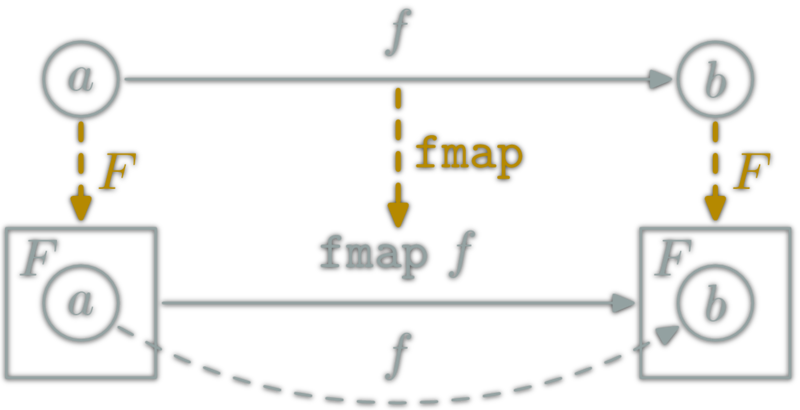
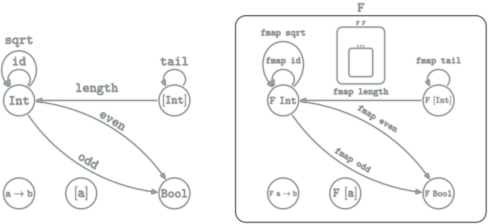
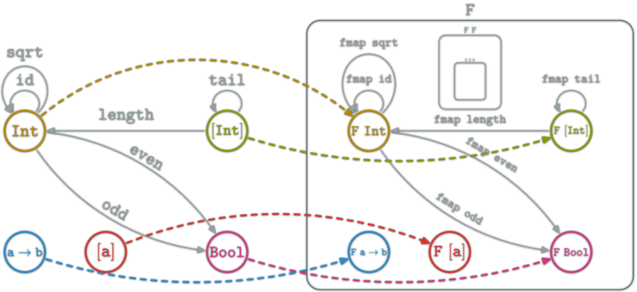
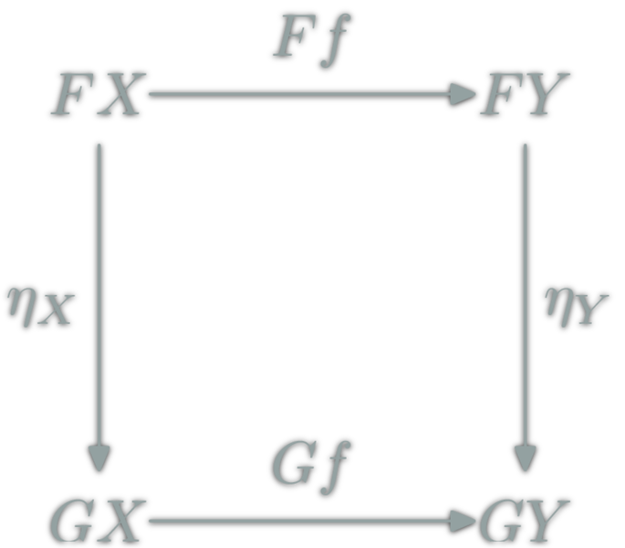

Smaller Examples
Strings

- \(\ob{Str}\) is a singleton
- \(\hom{Str}\) each string
- ∘ is concatenation
(++)
-
"" ++ u = u = u ++ "" -
(u ++ v) ++ w = u ++ (v ++ w)
Recent Math Field
1942-45, Samuel Eilenberg & Saunders Mac Lane
Certainly one of the more abstract branches of math
★: When is one thing equal to some other thing?, Barry Mazur, 2007
☆: Physics, Topology, Logic and Computation: A Rosetta Stone, John C. Baez, Mike Stay, 2009
Category Theory is a new language/framework for Math
Programming is doing Math
Strong relations between type theory and category theory.
Not convinced?
Certainly a vocabulary problem.
One of the goal of Category Theory is to create a homogeneous vocabulary between different disciplines.
Math vocabulary used in this presentation:
Category, Morphism, Associativity, Preorder, Functor, Endofunctor, Categorial property, Commutative diagram, Isomorph, Initial, Dual, Monoid, Natural transformation, Monad, Klesli arrows, κατα-morphism, ...
| Mathematician | Programmer |
|---|---|
| Morphism | Arrow |
| Monoid | String-like |
| Preorder | Acyclic graph |
| Isomorph | The same |
| Natural transformation | rearrangement function |
| Funny Category | LOLCat |
A way of representing things and ways to go between things.
A Category \(\mathcal{C}\) is defined by:
\(\ob{\mathcal{C}}\) is a collection
\(A\) and \(B\) objects of \(\C\)
\(\hom{A,B}\) is a collection of morphisms
\(f:A→B\) denote the fact \(f\) belongs to \(\hom{A,B}\)
\(\hom{\C}\) the collection of all morphisms of \(\C\)
Composition (∘): associate to each couple \(f:A→B, g:B→C\) $$g∘f:A\rightarrow C$$
for each object \(X\), there is an \(\id_X:X→X\),
such that for each \(f:A→B\):
Composition is associative:
Two path with the same source and destination are equal.
\(\ob{\C},\hom{\C}\) fixed, is there a valid ∘?
(.) )
(++) "" ++ u = u = u ++ "" (u ++ v) ++ w = u ++ (v ++ w) Each Monoid \((M,e,⊙): \ob{M}=\{∙\},\hom{M}=M,\circ = ⊙\)
Only one object.
Examples:
(Integer,0,+), (Integer,1,*),
(Strings,"",++), for each a, ([a],[],++)
At most one morphism between two objects.
Any set \(E: \ob{E}=E, \hom{x,y}=\{x\} ⇔ x=y \)
Only identities
The same object can be seen in many different way as a category.
You can choose what are object, morphisms and composition.
ex: Str and discrete(Σ*)
Any property which can be expressed in term of category, objects, morphism and composition.
 isomorphism: \(f:A→B\) which can be "undone" i.e.
\(∃g:B→A\), \(g∘f=id_A\) & \(f∘g=id_B\)
in this case, \(A\) & \(B\) are isomorphic.
A≌B means A and B are essentially the same.
In Category Theory, = is in fact mostly ≌.
For example in commutative diagrams.
A functor is a mapping between two categories. Let \(\C\) and \(\D\) be two categories. A functor \(\F\) from \(\C\) to \(\D\):
An endofunctor for \(\C\) is a functor \(F:\C→\C\).
Categories and functors form a category: \(\Cat\)
Category \(\Hask\):
(.) Haskell function composition
Forget glitches because of undefined.
In Haskell some types can take type variable(s). Typically: [a].
Types have kinds; The kind is to type what type is to function. Kind are the types for types (so meta).
Int, Char :: *
[], Maybe :: * -> *
(,), (->) :: * -> * -> *
[Int], Maybe Char, Maybe [Int] :: *Sometimes, the type determine a lot about the function★:
fst :: (a,b) -> a -- Only one choice
snd :: (a,b) -> b -- Only one choice
f :: a -> [a] -- Many choices
-- Possibilities: f x=[], or [x], or [x,x] or [x,...,x]
? :: [a] -> [a] -- Many choices
-- can only rearrange: duplicate/remove/reorder elements
-- for example: the type of addOne isn't [a] -> [a]
addOne l = map (+1) l
-- The (+1) force 'a' to be a Num.
A Haskell Functor is a type F :: * -> * which belong to the type class Functor ; thus instantiate
fmap :: (a -> b) -> (F a -> F b).
& F: \(\ob{\Hask}→\ob{\Hask}\)
& fmap: \(\hom{\Hask}→\hom{\Hask}\)
The couple (F,fmap) is a \(\Hask\)'s functor if for any x :: F a:
fmap id x = x
fmap (f.g) x= (fmap f . fmap g) x
data Maybe a = Just a | Nothing
instance Functor Maybe where
fmap :: (a -> b) -> (Maybe a -> Maybe b)
fmap f (Just a) = Just (f a)
fmap f Nothing = Nothingfmap (+1) (Just 1) == Just 2
fmap (+1) Nothing == Nothing
fmap head (Just [1,2,3]) == Just 1instance Functor ([]) where
fmap :: (a -> b) -> [a] -> [b]
fmap = mapfmap (+1) [1,2,3] == [2,3,4]
fmap (+1) [] == []
fmap head [[1,2,3],[4,5,6]] == [1,4]Functor is a type class used for types that can be mapped over.
[], Trees, Map, HashMap...Maybe a: help to handle absence of a.safeDiv x 0 ⇒ NothingEither String a: help to handle errorsreportDiv x 0 ⇒ Left "Division by 0!"Put normal function inside a container. Ex: list, trees...

Haskell Functors are:
Haskell functor can be seen as boxes containing all Haskell types and functions. Haskell types is fractal:
Haskell functor can be seen as boxes containing all Haskell types and functions. Haskell types is fractal:
Haskell functor can be seen as boxes containing all Haskell types and functions. Haskell types is fractal:

A simple basic example is the \(id_\Hask\) functor. It simply cannot be expressed as a couple (F,fmap) where
F::* -> *fmap :: (a -> b) -> (F a) -> (F b)Another example:
T)=Intf)=\_->0\(\mathtt{[a]}∈\ob{\Hask}\) but is also a category. Idem for Int.
length is a Functor from the category [a] to the category Int:
⇒
length [] = 0
length (l ++ l') = (length l) + (length l')
If \(\C\) is small (\(\hom{\C}\) is a set). All functors from \(\C\) to some category \(\D\) form the category \(\mathrm{Func}(\C,\D)\).
\(\mathrm{Func}(\C,\C)\) is the category of endofunctors of \(\C\).
Let \(F\) and \(G\) be two functors from \(\C\) to \(\D\).
 A natural transformation: familly η ; \(η_X\in\hom{\D}\) for \(X\in\ob{\C}\) s.t.
ex: between Haskell functors; F a -> G a
Rearragement functions only.
data List a = Nil | Cons a (List a)
toList :: [a] -> List a
toList [] = Nil
toList (x:xs) = Cons x (toList xs)toList is a natural transformation. It is also a morphism from [] to List in the Category of \(\Hask\) endofunctors.
data List a = Nil | Cons a (List a)
toHList :: List a -> [a]
toHList Nil = []
toHList (Cons x xs) = x:toHList xstoHList is a natural transformation. It is also a morphism from List to [] in the Category of \(\Hask\) endofunctors.
toList . toHList = id & toHList . toList = id &[] & List are isomorph. toMaybe :: [a] -> Maybe a
toMaybe [] = Nothing
toMaybe (x:xs) = Just xtoMaybe is a natural transformation. It is also a morphism from [] to Maybe in the Category of \(\Hask\) endofunctors.
mToList :: Maybe a -> [a]
mToList Nothing = []
mToList Just x = [x]toMaybe is a natural transformation. It is also a morphism from [] to Maybe in the Category of \(\Hask\) endofunctors.

Bool lists longer than 1. The Problem; example with lists:
f x = [x] ⇒ f 1 = [1] ⇒ (f.f) 1 = [[1]] ✗
g x = [x+1] ⇒ g 1 = [2] ⇒ (g.g) 1 = ERROR [2]+1 ✗
h x = [x+1,x*3] ⇒ h 1 = [2,3] ⇒ (h.h) 1 = ERROR [2,3]+1 ✗ The same problem with most f :: a -> F a functions and functor F.
How to fix that? We want to construct an operator which is able to compose:
f :: a -> F b & g :: b -> F c.
More specifically we want to create an operator ◎ of type
◎ :: (b -> F c) -> (a -> F b) -> (a -> F c)
Note: if F = I, ◎ = (.).
Goal, find: ◎ :: (b -> F c) -> (a -> F b) -> (a -> F c)f :: a -> F b, g :: b -> F c:
(g ◎ f) x ???f to x ⇒ f x :: F bg properly to an element of type F b?Goal, find: ◎ :: (b -> F c) -> (a -> F b) -> (a -> F c)f :: a -> F b, g :: b -> F c, f x :: F b:
fmap :: (t -> u) -> (F t -> F u)!(fmap g) :: F b -> F (F c) ; (t=b, u=F c)(fmap g) (f x) :: F (F c) it almost WORKS!join :: F (F c) -> F c(g ◎ f) x = join ((fmap g) (f x)) ☺<=< (in Control.Monad).For ◎ to work like composition, we need join to hold the following properties:
join (join (F (F (F a))))=join (F (join (F (F a))))join by ⊙; this is equivalent to(F ⊙ F) ⊙ F = F ⊙ (F ⊙ F)η :: a -> F a s.t.η⊙F=F=F⊙ηNow the composition works as expected. In Haskell ◎ is <=< in Control.Monad.
g <=< f = \x -> join ((fmap g) (f x))
f x = [x] ⇒ f 1 = [1] ⇒ (f <=< f) 1 = [1] ✓
g x = [x+1] ⇒ g 1 = [2] ⇒ (g <=< g) 1 = [3] ✓
h x = [x+1,x*3] ⇒ h 1 = [2,3] ⇒ (h <=< h) 1 = [3,6,4,9] ✓A monad is a triplet (M,⊙,η) where
a associate M a)⊙::M (M a) → M a ; join)η::a → M a)Satisfying
A Monoid is a triplet \((E,∙,e)\) s.t.
Satisfying
A Monad is just a monoid in the category of endofunctors, what's the problem?
The real sentence was:
All told, a monad in X is just a monoid in the category of endofunctors of X, with product × replaced by composition of endofunctors and unit set by the identity endofunctor.
[] :: * -> * an Endofunctorjoin :: M (M a) -> M a)-- In Haskell ⊙ is "join" in "Control.Monad"
join :: [[a]] -> [a]
join = concat
-- In Haskell the "return" function (unfortunate name)
η :: a -> [a]
η x = [x]Example: List is a functor (join is ⊙)
join [ join [[x,y,...,z]] ] = join [[x,y,...,z]]
= join (join [[[x,y,...,z]]])
join (η [x]) = [x] = join [η x]Therefore ([],join,η) is a monad.
A LOT of monad tutorial on the net. Just one example; the State Monad
DrawScene to State Screen DrawScene ; still pure.
main = drawImage (width,height)
drawImage :: Screen -> DrawScene
drawImage screen = do
drawPoint p screen
drawCircle c screen
drawRectangle r screen
drawPoint point screen = ...
drawCircle circle screen = ...
drawRectangle rectangle screen = ...main = do
put (Screen 1024 768)
drawImage
drawImage :: State Screen DrawScene
drawImage = do
drawPoint p
drawCircle c
drawRectangle r
drawPoint :: Point -> State Screen DrawScene
drawPoint p = do
Screen width height <- get
...foldacc type of the "accumulator":fold :: (acc -> a -> acc) -> acc -> [a] -> acc
Idea: put the accumulated value inside the type.
-- Equivalent to fold (+1) 0 "cata"
(Cons 'c' (Cons 'a' (Cons 't' (Cons 'a' Nil))))
(Cons 'c' (Cons 'a' (Cons 't' (Cons 'a' 0))))
(Cons 'c' (Cons 'a' (Cons 't' 1)))
(Cons 'c' (Cons 'a' 2))
(Cons 'c' 3)
4But where are all the informations? (+1) and 0?
Where is the missing information?
fmap(+1) and also knowing about the 0.First example, make length on [Char]
data StrF a = Cons Char a | Nil
data Str' = StrF Str'
-- generalize the construction of Str to other datatype
-- Mu: type fixed point
-- Mu :: (* -> *) -> *
data Mu f = InF { outF :: f (Mu f) }
data Str = Mu StrF
-- Example
foo=InF { outF = Cons 'f'
(InF { outF = Cons 'o'
(InF { outF = Cons 'o'
(InF { outF = Nil })})})}type Algebra f a = f a -> a
instance Functor (StrF a) =
fmap f (Cons c x) = Cons c (f x)
fmap _ Nil = Nilcata :: Functor f => Algebra f a -> Mu f -> a
cata f = f . fmap (cata f) . outFAll needed information for making length.
instance Functor (StrF a) =
fmap f (Cons c x) = Cons c (f x)
fmap _ Nil = Nil
length' :: Str -> Int
length' = cata phi where
phi :: Algebra StrF Int -- StrF Int -> Int
phi (Cons a b) = 1 + b
phi Nil = 0
main = do
l <- length' $ stringToStr "Toto"
...Once you get the trick, it is easy to extent to most Functor.
type Tree = Mu TreeF
data TreeF x = Node Int [x]
instance Functor TreeF where
fmap f (Node e xs) = Node e (fmap f xs)
depth = cata phi where
phi :: Algebra TreeF Int -- TreeF Int -> Int
phi (Node x sons) = 1 + foldr max 0 sonsCategory Theory oriented Programming:
No cat were harmed in the making of this presentation.
/
#